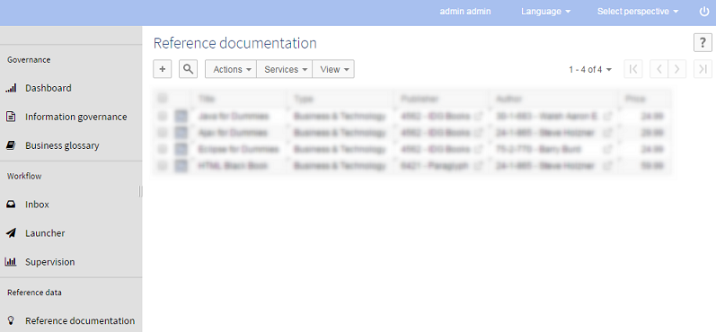
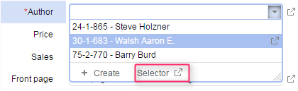
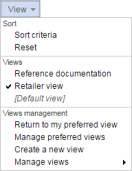
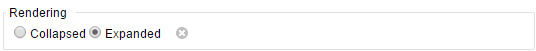

Release date: January 26, 2015
This release includes multiple new features, evolutions and improvements. We have focused our efforts on developing new powerful features and improving performance. Key evolutions:
The new Perspectives feature offers a simplified user interface that can be easily configured and adapted to the user's activity.
Additionally, improvements and complements have been included in this release; most notably combo-boxes now provide access to an advanced selection view.
Performance-wise, this release brings significant improvements on workflows and indexing, offering an enhanced user experience.
The new Perspectives feature offers users a simplified interface without having to request specific development or integration into an enterprise portal. A perspective includes a hierarchical menu to access relevant entities and services related to the user's activity.
Perspectives can be easily configured under the 'Administration' area. Several perspectives can be configured for different business lines within the company - or for a group of users with specific activities.
The existing user interface, now called 'Advanced perspective', remains available, but it is now possible to limit its access.
Perspectives can be configured in Administration > Perspectives.

See the User interface documentation, Perspectives configuration and Integration of UI services with workflows or perspectives for more information.
When defining a foreign key, a new feature now allows accessing an advanced selection view through the 'Selector' button.

If this property has been defined, a selection button will be displayed at the bottom right corner of the drop-down list. The 'Selector' button opens the advanced selection view from where sorting and searching options can be used. This selection view must have been previously configured in the data model and can be hierarchical or tabular.
See the Combo-box selector for more information.
The drop-down list design has also been lightened by removing the first line which displayed the current value of the foreign key field.
A new preview icon has been introduced and replaces the previous version. It has a thinner border and lightens the pages.
The 'View' menu has been slightly reorganized:
A new 'Manage preferred views' action has been added, replacing the former 'Set as default view' (see below).
The 'Withdraw current view' action has been replaced by '[Default view]' in the 'Views' sub-menu (the default view is directly deduced from the data model definition).
The 'Reset to default view' action has been replaced by 'Return to my preferred view'

Only one preferred view (previously called 'default view') by table was available for all users. It is now possible to define preferred views by profile (i.e. by role and/or by user).
The 'Manage preferred views' feature is only available to the data set owners.
See Manage recommended views for more information.
If a hierarchy node refers to a table record, a button to run UI services on it is now available, even if the record does not belong to the target table of the hierarchy.
Associations are now displayed in the record creation forms thanks to a configurable parameter located in the 'Ergonomics and layout' section of the 'Administration' area. By default, it is set to not displayed. When in creation mode, a standard label is displayed instead of the associated objects view since the record is not yet created.
See Ergonomics and layout for more information.
Configuration parameters have been added to the XML import wizard and to the interface configuration in Administration > User interface > Graphical interface configuration > Default option values > Import/Export > Ignore extra columns. Those parameters allow users running imports that will ignore the elements presents in the XML document to be imported, but that not are not (or no longer) defined in the data model.
It is now possible to specify that a group outside a table must be collapsed or expanded by default in the user interface.

See Advanced properties for fields for more information.
In the data modeling assistant, it is now possible to set several triggers on fields and tables.
See Triggers for more information.
It is now possible to specify a length constraint directly when creating a field in a mapped table (tables in relational data models, historized tables and replicated tables). As a length constraint is mandatory in mapped tables, this facilitates the definition of these tables.
In previous versions, it was possible from the data model to set a field as hidden in the search, but this restriction only applied to 'Text search'. This data model property has been enriched to offer more flexible options.
In the data model assistant, this property is accessed under Advanced properties > Default view. See Hiding a field in search tools for more information.
It is now possible to specify that a field must be excluded from the service that allows applying the last modifications performed on a record to other records of the same table. This can be done by using the new XML Schema attribute osd:applyLastModification="ignored".
See Apply last modifications policy for more information.
Accessing the work items inbox and other workflow entries is now smoother and faster thanks to a set of enhancements detailed below.
In order to improve workflow performances, new global permissions have been created. The workflow navigation pane display now depends on these new global permissions.
For example, if a user is allowed to display 'Workflow launchers', the 'Workflow launchers' entry will always be displayed in the navigation pane - even if no launcher is available. On the contrary, if a user is not allowed to display 'Workflow launchers', the entry 'Workflow launchers' will never be displayed in the navigation pane - even if launchers are available for this user.
See Global permissions for more information.
In order to improve workflow performances, workflow permissions have been simplified.
A user with any workflow permission (excluding the 'launch' and 'view completed workflow' permissions) is now systematically allowed to visualize workflows.
Permissions now directly determine which records are to be displayed in the workflows table. The records state is only evaluated to determine which action buttons are displayed.
See Backward compatibility for impacts.
See Permissions on associated data workflows for detailed information on workflow permissions.
See ProcessExecutionContext.WorkflowPermission in Java API for more information.
A new option is available in the configuration of permissions enabling to restrict the access of a workflow creator: if enabled, the creator of a workflow will only visualize the workflows he launched (and associated work items) in the 'Monitoring active workflows', 'Monitoring work items', and 'Completed workflows' sections. If a user is a workflow creator but has the permission to visualize workflows, this restriction is not applied.
See Permissions on associated data workflows for detailed information on workflow permissions.
The interface ActionPermissionsOnWorkflowContext has been cleaned to use ProcessExecutionContext methods. Some methods have been set as deprecated and others have been added: it is now possible to get the profile associated to each WorkflowPermission in the user interface, to use them in the programmatic action permissions. It is necessary to specify use cases and default behaviors for other cases.
See ActionPermissionsOnWorkflowContext in Java API for more information.
When a work item is offered to a role, all members of the role can take and start the work item. A notification can be sent to the members of the role when the work item is offered to them.
A new notification 'Offered work item allocated to another user' has been added to notify the members of the role when the work item is taken by or allocated to another user. In this way, they get real time notifications when a work item is no longer available.
This notification can be set in the 'Notification' section of a user task in the workflow model.
When the deadline of a work item has been reached, a notification email can be sent to the concerned users. By default, this email is sent every day until the work item is completed. It is now possible to change the frequency of notifications thanks to the 'Notification frequency' parameter in the user task definition under the 'Deadline' tab. This parameter defines the number of days between each email notification after the deadline has been reached. This allows reducing the frequency of deadline notifications.
A new method has been added to specify the content type of an email.
Two content types are available: 'text/plain' (default content type) and 'text/html'.
See MailSpec.setContentType and MailSpec.ContentType in Java API for more information.
A new method has been added to get the step identifier.
See ProcessInstanceStep.getId in Java API for more information.
This new method gives the possibility to know if the deadline of a current work item has been reached.
See UserTask.WorkItem.hasReachedDeadline in Java API for more information.
It is now possible to download the data services WSDL from an EBX5 server using HTTP(S).
See WSDL download using a HTTP request for more information.
It is now possible to log a procedure execution start.
See Log procedure starts for more information.
It is now possible to log a data set validation start.
See Log validation starts for more information.
The log category ebx.log4j.category.log.validation has been created to log the details of data sets validation in a specific output. In prior versions, data sets validation details were logged in the category ebx.log4j.category.log.setup. Consequently, the category ebx.log4j.category.log.setup will no longer contain the data sets validation details if the new category ebx.log4j.category.log.validation has been specified in the ebx.properties file.
See Configuring the EBX5 logs for more information.
Used for activity monitoring and statistics purposes, this new feature and its management console are integrated into EBX5. Only available for administrators. The feature supervision relies on the API which can only be used from the add-ons, where implementation should be located inside EBX5 modules.
See Event broker for more information.
A task execution can now be launched on demand.
It is now possible to select several active sessions for termination. Go to Administration > Actions > User sessions.
The console manager now displays, for each registered slave, the TCP ports used for sending archives.
A new wizard provides extra flexibility for:
slave node multi-selection
delivery data space deletion
slave node unregistration
See Services on master nodes for more information.
Data services are no longer blocked during full resynchronization.
At the second phase of the two-phase commit process, commit and rollback requests are sent in parallel to all concerned slaves.
The history profiles defined in 'lax' mode had exactly the same behavior as the ones in 'strict' mode. Hence, in the definition of history profiles, the parameter 'Transaction fails if historization is not available' has been removed. Consequently, built-in profiles have been deprecated, and new ones have been added:
ebx-referenceBranch-strict and ebx-referenceBranch-lax have been deprecated, and ebx-referenceBranch has been created to be used instead.
ebx-allBranches-strict and ebx-allBranches-lax have been deprecated, and ebx-allBranches has been created to be used instead.
This has no impact on historization for data models using deprecated profiles, which already behave according to the 'strict' mode.
The new method getInputParameterValue allows getting the value of a parameter that has been specified in the initial HTTP request.
See Session.getInputParameterValue in Java API for more information.
The new factory method Archive.forFileInDefaultDirectory allows specifying an archive in the default archives directory. This server directory stores archives that have been exported and imported from the user interface.
See Archive.forFileInDefaultDirectory in Java API for more information.
A new option now allows to explicitly export data with additional inheritance information: whether a record is root, overwriting, inherited or occulting; and whether a field value is inherited or not.
The CSV import supports the same option. It allows taking into account the inheritance modes defined for fields or records during the import, so as to ensure a complete round-trip without information loss.
See ExportImportCSVSpec.setInheritanceEnabled in Java API for more information.
In the user interface, it is now possible to configure the list separator to be used when exporting table records to CSV files.
The configuration is located under Administration > Graphical interface configuration > Default option values > Import/Export. The configuration can be modified locally for each CSV export.
See Graphical interface configuration for more information.
A new method allows knowing if a data set contains errors that make its content unavailable.
See Adaptation.hasSevereError for more information.
An optimization of the internal structure of non-primary key indexes improves the performance of mass-deletions. The performance benefit is particularly important on large tables having an indexed field whose distinct values are limited and shared by many records (bug #13425). Mass-updates modifying the value of such fields are also much faster.
Moreover, extra optimizations have been made to minimize the memory usage of all indexes in semantic mode (both primary key and non-primary key indexes). The following memory gains have been observed:
a division by 2 for indexes whose field is auto-incremented;
a division by 8 for non-discriminant indexes.
The property ebx.validation.report.keepInMemory has been added to the main configuration file. When activated (by default), it allows the validation report to be kept in memory, regardless of the specified loading strategy of data spaces.
Retaining the validation report prevents the server from performing multiple validations, which are potentially expensive. However, in rare cases where numerous data spaces have been loaded, retaining many reports could consume large amounts of memory. In such a case, it is recommended to deactivate this property.
# Specifies whether the validation report should be kept in memory, # regardless of the loading strategy of the data space. # Default value is true. However, it is recommended to deactivate it # when the repository contains a large number of open data spaces and # data sets. #ebx.validation.report.keepInMemory=false
In the 'Data workflows' section, all entries ('Inbox', 'Workflow launchers', 'Monitoring', etc.) are now displayed according to the associated global permissions. Before this evolution, a workflow entry was only displayed if the associated table was not empty.
In other words, it is now global permissions that determine the workflow entry to be displayed, and not the content of associated tables anymore.
By default, all new workflow global permissions are enabled for all users.
Consequently, a user who had no authorization to launch a workflow can now see the 'Workflow launchers' entry. When selecting this entry, the associated table will be empty.
The administrator must configure these global permissions to determine how workflow entries should be displayed according to the different profiles.
Workflow permissions have been greatly simplified in order to improve workflow performances.
These simplifications may impact the display of the 'Data workflow' section for some users: users may visualize more workflows than they used to.
Now, all users who can visualize workflows are also able to visualize publications, workflows and work items, regardless of the workflow state (including workflows in error state). Before this simplification, only workflow administrators could visualize workflows in error state.
Users who can unpublish now automatically have the permission to visualize workflows. Hence, they can visualize all publications, workflows and work items, regardless of the publication state. The publication state only determines if the 'unpublish' action button should be displayed. Previously, these users could only visualize disabled publications (and associated workflows and work items). Enabled publications (and associated workflows and work items) were hidden.
The same evolution applies to the 'disable' permission. Now, users who can disable a permission are systematically allowed to visualize all publications, workflows and work items, regardless of the publication state. The publication state only determines if the 'disable' action button should be displayed. Previously, these users could only visualize enabled publications (and associated workflows and work items). Disabled publications (and associated workflows and work items) were hidden.
These simplifications impact the ActionPermissionsOnWorkflow API. To know if a user can visualize a workflow, the VIEW permission is evaluated. If the permission is disabled, other permissions are evaluated at the same level (UNPUBLISH, DISABLE, ADMINISTRATE .... and so on). If the user has another permission (excluding the "CREATE_PROCESS" permission), he will have the permission to "VIEW", regardless of the workflow state.
See Permissions on associated data workflows for detailed information on workflow permissions.
See ProcessExecutionContext.WorkflowPermission Java API for more information.
See ActionPermissionsOnWorkflow Java API for more information.
A session is now mandatory to get a process launcher from the WorkflowEngine API. If no session is identified, an exception is thrown.
See WorkflowEngine.getProcessLauncher for more information.
Backward compatibility issue due to a lack of compliance in the namespace changes of the generated WSDL.
EBX5 can be configured to run in compatibility mode thanks to the ebx.dataservices.wsdlTargetNamespace.disabledCheck property. See Configuring data services and 13169 bug detail for more information.
XML comments have been disabled in data services responses.
In order to upgrade your version of EBX5, perform the following steps:
Backup your repository, including the RDBMS and the directory ebx.repository.directory.
Replace the *.war and ebx.jar files on your application server.
[10503] Add-on services are assigned to multiple menu groups if 'orderInMenu' is set in module.xml.
Usually, all services in module.xml for the same 'resourcePath' will be assigned to only one menu group with the name of the add-on. But when the property 'orderInMenu' is set, these services are assigned to several menu groups with the same group name.
[12781] The listener of the workspace resize does not work in a UIService.
In a UIService, if there is no bottom bar in a form, or if there is no form at all, when the listener of the workspace resize is called it returns the previous width, and not the current width.
[13091] Records with the same primary key are persisted in different blocks.
Records with the same primary key are persisted after an XML import with a trigger. The result is after deleting all records, then exporting data space archive, the records still exist.
[13115] Some temporary files for XML audit trail are not properly cleaned.
The XML audit trail produces some temporary files which are not properly cleaned.
[13262] Unspecified behavior if reusing a 'committed' ProcedureContext.
The reference to a ProcedureContext Java instance is memorized, so that it can be accessed (for example through a static variable). If this reference is then reused after the associated transaction has been committed, no systematic and clear error is raised to indicate that this is not allowed.
Instead, when a method of a 'committed' ProcedureContext is invoked, an IllegalStateException should always be thrown.
[13425] A non-primary key index can lead to very slow deletions.
A non-primary key index leads to very slow deletions if, for a given value, many records match. This is particularly noticeable for mass-deletions in large tables.
Mass-updates modifying these indexed fields are also concerned.
[13457] On PostgreSQL, OutOfMemoryError when retrieving large amounts of data on mapped tables.
On PostgreSQL, OutOfMemoryError may occur when retrieving large amounts of data (> 500.000 records) on relational or historized tables. This is due to the internal handling of such requests, for example in data hierarchies.
[13614] When the audit trail is not activated, procedures are no longer logged in kernel.log.
When the audit trail is not activated, procedures are no longer logged in kernel.log.
[14255] An exception occurs while logging a request based on a complex terminal node.
[7788] Unfriendly error message displayed when exporting a data model to an archive file with special characters in its name.
In the DMA, when the user exports a data model under 'Manage versions' to an archive file containing the "*" or "<" character in its name, an unfriendly error message is displayed.
[10178] Java component does not update properly after creating a new component.
On the Advanced properties of a table, when a user creates a Component through the Trigger, the component does not apply immediately after that.
[11001] Incorrect behavior when using an invalid value for 'Greater than [constant]' and a valid value for 'Less than [constant]'.
When the user enters an invalid value for 'Greater than [constant]' and a valid value for 'Less than [constant]', after clicking on the 'Save' button, the value of 'Less than [constant]' is not defined.
[11942] An exception is raised in the log file when publishing a history model with the 'Maximum length' field set to 0.
When the user publishes a history model with the 'Maximum length' field set to "0", an error occurs and an exception is thrown in the log file.
[12448] System blocked when publishing a data model with a foreign key pointing to a data set that is not in the same data space.
All data sets using the same data model produce an error in the repository if this data model defines a foreign key pointing to another data set in a same data space and if this data set does not exist in at least one data space in which this data model is used.
[12778] The UDA catalog path field in the advanced properties of a foreign key disappears after being set to 'not defined'.
After creating a foreign key, go to its Advanced properties. The UDA catalog path field is displayed. When the user clicks on 'Set field to [not defined]' and saves, the field disappears.
[12790] Incorrect error message when specifying a value for 'Fields to index' without entering a value in 'Index name'.
In a data model, in the Indexes tab under the 'Advanced properties' of a table, when a user specifies a value for 'Fields to index' without entering a value into the 'Index name' field and then clicks on the 'Save' button, an error message is shown with an incorrect content.
[12796] An unexpected error occurs on the 'publish model' page if an invalid XPath expression is defined.
When the user defines an invalid XPath expression with a field in the "Current table fields" equal to a field in the "Target table fields", an unexpected error occurs on the 'publish model' page.
[12823] Impossibility to create validation rules for lists of decimal fields.
Impossibility to create validation rules comparing 2 decimal fields.
[12834] A Javascript error occurs after clicking on a radio button in Rendering.
In the Default view of a group, after the user clicks on a radio button under Rendering, a Javascript error occurs.
[12861] No error message given when the Minimum number of associated objects is greater than the Maximum number.
[12870] If a multivalued complex has a field named "action", it is not possible to add a value.
[12906] Impossibility to access 'root' after cancelling a 'Create before/after' action in Data Models.
In Data Models, when a user uses the 'Create before' or 'Create after' services from a table or a group and then cancels this action, an error message appears that says: "Not allowed to access record 'root'".
[12925] Impossible to move criteria in a validation rule creation.
In a validation rule containing criteria under blocks, when the user runs the 'Move' service on a criterion or a block, the arrow buttons are not displayed.
[12965] An error occurs on the publish 'Data models' page when defining an invalid XPath constraint for an associated object.
On an associated object, when user defines an invalid XPath functions constraint, an error occurs on the publish 'Data models' page.
The invalid XPath functions constraint concerned are 'starts-with( string, string )' and 'contains( string, string )'.
[12970] Elements under the previous model do not expand automatically when the user clicks on 'Show all' in the data model evolution.
On the data model evolution screen, when the user clicks on 'Show all', the elements under 'Current model' expand automatically while the elements under 'Previous model' do not.
[12997] An error occurs when displaying a multi-value computed field.
When a multi-value field defines a computation rule, an error occurs when displaying this field in the associated data set. An exception is thrown when the user accesses the table containing this field.
[13045] A Javascript error occurs after clicking on the snapshot's context-sensitive help button in the comparison screen.
[13077] Exception in log file when publishing model containing association with invalid filter.
When the user publishes a data model containing an association with an invalid filter, an unfriendly error message is displayed and an exception is thrown in the log file.
[13216] The 'Simple controls' tab is displayed on the selection nodes.
The 'Simple controls' tab is displayed on the selection nodes.
[13350] An error message is displayed when the user publishes a data model defining a foreign key with an incorrect default value.
A runtime exception occurs when the user publishes a data model with a default value on a foreign key that is not compatible with the target table primary key type.
[13584] Trick to properly publish a model when index fields are not displayed in 'Fields to index'.
The user can publish a model containing index with HTML/Text/Password data type even though these fields are not displayed in 'Field to index' list to select.
[13618] An unexpected error occurs when publishing a data model with a foreign key pointing to an invalid data space.
[13695] An improper icon for an association object under 'complex data type' is displayed.
On a table containing an association object, if user converts this table to a reusable type, association object's icon under 'complex data type' is field icon instead of its usual one.
[13719] The 'comparison mode' property should be available for a primary key to override an inherited value.
The 'comparison mode' property should be displayed in the primary key fields to be able to override the value that can be inherited from a simple type.
[13755] An error occurs when the user imports an 'XML Schema' document.
An exception occurs when the user imports an 'XML Schema' document defining inter data set foreign keys.
[13756] Cannot modify label of data model publication which containing a space at the end of publication name.
After creating a publication containing space in the end of its name, user cannot modify the label when editing the description
[13815] Should not define both foreign key and selection node properties for a field.
After user defines a field to foreign key, user can also define this field to selection node, even though this field is only used as selection node
[14163] A uniqueness constraint on multiple fields defined as warning is raised as an error at validation time.
With a uniqueness constraint on multiple fields, if the validation message is defined as level warning, it is raised as an error at validation time.
This happens with the default message, not with a custom localised message.
[14222] Group and association elements are set as primary key after created by clicking 'Create and add another element button'.
After creating a primary when user clicks on 'Create and add another element' button to create a group or association, the created group/association is defined as a part of the primary key.
[10612] The 'Select all' checkbox remains checked after unselecting one option on the Data service 'Lineage' page.
The 'Select all' checkbox should remain unchecked if at least one option is unselected.
[10986] The 'Data services' and the 'D3' temporary files are not deleted after use.
The temporary files created by both 'Data Services' and 'D3', containing the SOAP messages and archives, should be deleted after use in order to avoid the file system's overload.
[12904] "AccessRightsType" nodes should not appear in a generated WSDL when there is not any method using them in the WSDL.
[13169] Backward compatibility issue due to a lack of conformity in the namespace changes of the generated WSDL.
Since EBX 5.5.0 version, the target namespace "ebx-dataservices" has been replaced with "urn:ebx:ebx-dataservices".
It can break the implementation.
[13264] Useless comments on a select operation.
The XML comment line, returned at the beginning of the XML response, may prevent a client application to process as expected.
[13422] The pagination parameter on the 'select' operation should not be required in WSDL.
When a select operation uses a validation process and the pagination feature is not used, an empty XML element 'pagination' is required.
[13564] 'Get changes' and 'Get credentials' should not be executed on the same operation.
On the Data services 'Lineage' page, when checking 'Get changes', the generated WSDL also contains the 'Get credentials' operation, which is linkless.
Therefore, 'Get credentials' is included in the WSDL only if this one is explicitly checked on the lineage table form.
[13943] Impossible to run WSDL in Soap UI on a proper way.
After the user has generated a WSDL file and then runs in the SOAP UI, no response is displayed.
[11585] In a data set, data spaces with a label containing cross script code are not displayed in the data space menu.
[11636] The value of a field containing cross script code is not displayed correctly in the history table.
When a user displays the history of a table containing a field with a cross script value, this value is not displayed correctly.
[11781] Impossibility to define permissions on the history administration data set.
[12868] The 'Pre-validating merge' fails because the parent data space is not locked.
When merging data spaces with a 'Child merge policy' set to 'Pre-validating merge', the UI procedure must lock the parent data space first.
[12935] A fatal error occurs when clicking on the Preview button of a foreign key with a relative path in the history table.
[13114] In the history view, when the current user does not have write permissions, the 'Restore from history' action should be hidden.
[13416] An unexpected error is displayed when the user merges a data space with a modified permission.
When merging a data space with its parents, if a data set is deleted on its parent space and the permission of this data set is modified on the child data space, an unexpected error is displayed.
[13459] Values of the multi-value field are improperly displayed in the history table.
In the history table, values of multi-value field are displayed as HTML tags.
[13464] The value of a hidden field is not displayed as '[hidden value]' on the restore screen.
If a hidden field is not a defined value, when a user who does not have the right to see it restores the record, the value of the hidden field is displayed as '[not defined]' instead of '[hidden value]'.
[13490] The foreign key label is improperly displayed in the history table when it has a special character in the HTML tag.
[13494] A preview button is displayed in the history tabular view on a foreign key field which has no value.
[13499] The values of a multi-value foreign key are not fully displayed when the user clicks on the preview button in the history table.
When the user clicks on the preview button of a multi-value foreign key in the history table, only the first value is displayed.
[13511] The parameter "Transaction fails if historization is not available" is deprecated.
The parameter "Transaction fails if historization is not available" is irrelevant in the current version of the product, as the history should always remain consistent with the content of the table.
[13605] On repository start, data models' history profiles are not checked.
When starting a repository, data models are validated but the actual existence of the history profile specified by the osd:history property is not checked. It will be checked only if a data model 'refresh' is performed.
[13681] A fatal error occurs when comparing records in an transaction history table a second time.
In an transaction history table, the user compares records then closes the form. If the user gets back to the transaction history table and compares the records again, a fatal error occurs.
[11456] The 'Revalidate' button is not always displayed in the validation report of a data set if there are too many messages.
After the validation in a data set containing a 'Filter' in the foreign key field and at least two 'Unique constraint' elements in the same table, the 'Revalidate' button is not always displayed in the validation report.
[13181] The validation messages of the level warning should always be displayed when submitting a record form.
The validation messages of the level warning should be displayed when submitting a record form even if the validation messages threshold is exceeded.
[13472] Validation messages are still displayed after submitting a form.
Validation messages are still displayed about fields with erroneous values, which have already been fixed, if the form has other fields in error on submit.
[13509] An error occurs with a uniqueness constraint on two fields if one field contains the '$' character.
With a uniqueness constraint on two fields, an error occurs if one field contains the '$' character.
[7946] Missing validation error message for the "Table" mandatory field of a dataset permission.
After adding an occurrence of a Specific policy by Table of a dataset permission, no value is selected for the mandatory fields, then the record is submitted: the system does not display any error message.
[8682] Value of 'Specific roles' in directory administration resets after using 'Preview' button.
In the 'Directory' section of the Administration area, if the user selects a value for the 'Specific roles' field, uses the 'Preview' button, then closes the pop-up, the selected value resets to the default value.
[9309] Foreign key drop-down menu is not sorted in ascending order when its default label is set to another foreign key field.
[9734] Inability to duplicate a record on a child dataset if the table's primary key is an auto-increment field.
If the primary key of a table is an auto-increment field, it is impossible to use the 'Duplicate this record' service to create a duplicate record on the child dataset.
[10004] Incorrect value displayed for read-only boolean fields.
When a boolean field is read-only and does not have a value, the user interface displays false instead of not defined.
[10103] An error occurs when closing a foreign key pop up after closing an URL window.
This issue occurs when the user opens a window with the same URL than the window the user is working on, and then closes it. If the user then opens a foreign key pop up and clicks to close, a technical error is displayed.
[11000] A Javascript error occurs after creating an association object.
When a user creates a new association object, a Javascript error occurs.
[11127] Adding a "best matching" widget in a UIBean for a read-only node displays the input field.
If the target node is in read-only according to the user's permissions, the method aResponse.addWidget(aResponse.newBestMatching(Path)) adds the component in edition mode instead of displaying the value.
[11289] 'Save' and 'Save and close' buttons missing when creating a record in a table containing only auto-increment primary key fields.
The user cannot see the 'Save' and 'Save and close' buttons when creating a new record in a table which contains only auto-increment primary key fields.
[11362] When duplicating a dataset it's impossible to change the new ones owner.
When duplicating a dataset, changing the owner of the new one has no effect.
[11383] An exception occurs when ']' character is missing at the end of the predicate in a permalink.
When the user enters a permalink in which ']' character is missing at the end of the predicate, an exception error occurs in the kernel log.
[11387] On Firefox and IE, when checking selection boxes, the number of selected records is improperly displayed in the hierarchy view.
[11399] Impossible to properly sort by clicking on the column header in relational tables.
In a relational table, when the user clicks on a column header (except for the primary key/foreign key column), the content of the column is not sorted.
[11510] An HTML entity is displayed after saving an Owner profile containing double quote on the Information page.
On the 'Information' page of any dataset, when a user selects an Owner profile containing double quote characters then clicks on Save, the HTML entity is displayed.
[11534] With validation search, the label "filtered" remains displayed when applying an empty filter.
In validation search, when user unchecks all conditions and applies search, the label "filtered" remains displayed.
[11628] Incorrect behavior of a view with authorized profiles containing a cross script code profile.
After a user creates a Custom view with an authorized profile containing a cross script code profile, this profile becomes an invalid value.
[11664] A fatal error occurs when saving a hierarchy view with special characters in its 'Label'.
[11719] The expand/collapse icon is displayed for a hierarchy dimension node while it has no child nodes.
In the hierarchy creation, when the user selects a dimension, the expand/collapse icon beside the dimension is still displayed. Expanding the node displays an empty tree.
This behavior occurs because the dimension link is based on a join table with four primary key fields. This kind of dependency link is not allowed anymore.
[11792] An unset node, contained in the search results, is not displayed in an ordered hierarchical view.
In a hierarchical view, the records under an unset node, which is contained in the search results, is not displayed in the hierarchical view.
[11855] [IE8, 9,10] The tabular view is displayed after clicking on the label in the last hierarchy creation screen.
On IE8/9/10, in the last hierarchy creation screen, when the user clicks on the label dimension, the tabular view is displayed.
[12142] No item is found in the foreign key when searching for a value greater than 1000 that is not in the target table primary keys.
For a foreign key field whose default label contains a number, no item is found when the user searches a number greater than 1000 without thousands-separator and this number is not among the primary keys of the target table. This behavior applies to both the 'Text search' and the combo-box search.
[12313] The publication name of a view does not reset in the publication view pop-up.
This issue occurs when a user publishes views. On the "Publication of view" pop-up, the publication name of the previously published view is displayed as the default name of the current view.
[12505] Invalid value displayed after creating foreign key criterion containing 'Not defined' value in tabular/hierarchy view creation.
In the filter of a simple tabular view creation, when the user creates a foreign key criterion containing the 'Not defined' value and clicks on the 'Create and apply' button, an invalid value is displayed instead of the 'Not defined' value.
[12720] The 'Labels' field in the Hierarchy view creation is displayed incorrectly if it contains double quote characters.
[12723] View group field incorrectly displays the View group name after selecting or modifying a custom view.
This issue occurs when a user creates a View group with a View group label containing the double quote '"', less-than sign '<' and greater-than sign '>' characters.
The View group name will be displayed incorrectly after the user selects or modifies a custom view.
[12738] An error message for an invalid filter is still raised even when the criterion has been corrected.
In the Custom view creation, if a user adds an invalid criterion in a filter, an error message appears.
When the user wants to update the value contained in this filter, he cannot save it since the error message is still displayed.
[12744] Filter's misbehavior when saving the filter after deleting criteria.
This issue occurs when user applies a search criteria and save the filter after deleting the criteria. The system displays deleted criteria in saved filter instead of displaying an error message.
[12758] Impossibility to "Duplicate" or "Modify" a simple tabular view with a filter containing a decimal or integer criterion.
[12762] An exception is thrown in the log file when the user accesses a record through the preview button of a saved foreign key filter.
This issue occurs when the user saves a foreign key criterion in the filter of a table or a custom view. When the user clicks on the 'Preview' button of the criterion, 'InvalidPrimaryKeyException' is thrown in the log file.
[12765] Impossibility to directly edit a logical block criterion in a saved filter.
This issue occurs after the user saves a logical block containing some criteria in Search. From the saved logical block, if the user adds another logical block and saves again, the criteria in the newly saved logical block cannot be edited.
[12776] A fatal error occurs after running the 'Associate another object' service on a deleted record.
[12779] Incorrect behavior of the filter after withdrawing the custom view.
When a user applies the simple tabular view/hierarchy view, then applies a filter, the filtered result is displayed incorrectly after the user withdraws the view.
[12784] A JavaScript error occurs after checking/unchecking a box in the Text search.
This issue occurs on a table which has only one field displayed under the 'In fields' list in the Text search. After a user checks or unchecks the box, a Javascript error occurs.
[12791] An error occurs when applying a custom view containing a time criterion with the equal operator.
An error occurs when the user creates and applies a custom view which contains a time criterion with the equal operator. After closing the error message, the user can only delete this view.
[12815] Duplicated record from an association is displayed even though the foreign key to the source table is set to Not defined.
This issue occurs with the association of a source table, when the user duplicates a record. In the record creation pop up of the target table, if the user clicks to not define the foreign key then clicks on Save and close, the duplicated record is still displayed in the association.
[12820] An error occurs when applying a level two hierarchy with 'Prune' mode set to 'Yes'.
An error occurs when applying a hierarchy view with 'Prune' mode set to 'Yes' and dimension 'Gender' selected under 'List of party role-> with this party-> with this party->'.
[12824] In 'PartyModel', a fatal error occurs when applying 'Text search' to a level-two hierarchy view.
In 'PartyModel', applying a hierarchy view with a 'Gender' dimension selected under 'List of party role-> This party-> This party->' leads to a fatal error when applying 'Text search' to this view.
[12848] In the 'Groups of views' table, values in the 'XML Schema' dropdown menu are not sorted.
In the 'Groups of views' table of Views configuration under Administration, the publication values in the 'XML Schema' dropdown menu are not sorted by model name or publication order.
[12849] An error occurs when the user expands a leaf node on a level-two hierarchy.
In the 'Account' table of the 'DataHierarchy' model, when expanding a leaf node on a hierarchy view with dimension 'Country -> FKUnit(Unit)-> Account unit country oid( Account) ->Account hierarchy( Account)->Active', some errors occur.
[12863] An error occurs when displaying a multi-value computed field.
When a multi-value field defines a computation rule, an error occurs when displaying this field in the associated data set. An exception is thrown when the user accesses the table containing this field.
[12866] Limitations have not been set properly on hierarchy dimension based on join links.
Hierarchy dependency links used to build dimension levels may be foreign keys, enumerations, and join table links. In the last case, the join table link is either a primary key of two foreign keys or a primary key based on three foreign keys. In the last case, two of the foreign keys play the role of source and target links and the last key the role of a context constraint. For example, [delivery_date, project, sub_project], [actif, store, product] are valid join tables. Two limitations have not been set properly, first the primary key length must not exceed 3, then the context constraint level must be the root level.
[12882] A blank page is displayed when creating a hierarchy containing a filter under the target table dimension.
This issue occurs when a user creates a hierarchy view based on a dimension which is a recursive foreign key of the target table. Under this dimension, if the user creates a filter containing a criterion which is a recursive foreign key of the target table, a blank page is displayed when the user clicks to create the view.
[12885] An error occurs when displaying an association with a target table in another data model containing errors.
This issue occurs when the data model containing the target table has errors.
If a fatal error occurs in the data model containing the target table, an error is displayed in the association. An exception is thrown in the log.
[12888] The first page is always displayed in the association view after running a service.
In the association view, the system always displays the first page after running the 'Create', 'Associate' or 'Duplicate' services.
Expected result: the system should display the page that contains the new record.
[12913] Impossible to hide a field under a group of tables in the text search.
Although a field under a group of tables is set to 'hidden in text search' in the data model, this field is still available in the text search.
[12917] A fatal error occurs after saving a filter which is a combination of logical blocks.
When user saves a filter which is a combination of 'All criteria match' block and 'At least one criterion match' block or 'Not all criterion match' block and 'No criteria match' block, a fatal error occurs.
[12923] Activation paths '/' in a service of a data model does not activate the service on the data set.
[12960] Incorrect behavior of associated objects inheritance.
1. If the target table of the association is inherited, the inheritance buttons are displayed while the user attaches or moves objects.
2. When the user clicks on the inheritance buttons in the target table, the selection moves from the starting record to the target inherited table.
3. When the user tries to move occulted records, no error message is displayed.
[12973] A fatal error occurs when creating a child node on a parent node containing two identical primary keys in the hierarchical view.
After a user creates a new record on a parent node containing two identical primary key field values which are also foreign keys and refer to the same table, a fatal error occurs.
[12991] The table view selection is not properly handled in the case of concurrent updates.
When two users are accessing the same table, if one user deletes a record and the second one tries to select the same record, the checkbox is not checked but the label of the number of selected records is incremented and reads "1 selected record".
Furthermore, it is possible to execute a service. For instance, the XML export will create an empty file with just "<root/>". Other services like record duplication may lead to "Fatal Error".
[13024] In the history view, the 'U' icon is not displayed for a field which has been updated to '[not defined]'.
This issue occurs when the user updates a record after deleting a value on a field. In the history transaction record, the updated field is not marked with the 'U' icon.
[13072] An error occurs when applying an ordered hierarchy view containing filter when the record of source table does not exist.
[13074] A fatal error occurs when saving incorrect records with a multi-value group, containing multi-value fields.
This issue occurs when the user creates a record with a multi-value group, containing multi-value field. If the record does not comply with the multi value constraint and the user saves the record twice, a fatal error occurs.
[13080] An error occurs in computed decimal field using div/mod operator after updating field to multi-value.
This issue occurs when decimal field has computation rule with 'div' or 'mod' operator. After user updates the decimal field to multi-value, re-publishes the model and references to data set, an error occurs in computed field and java.lang.ClassCastException is thrown in the log file.
[13082] An unexpected error occurs after moving a node in an ordered hierarchy containing a filter under the hierarchy dimension.
[13096] When duplicating a custom view, the owner of the duplicate should be the duplicate's creator.
Actually, the duplicate's owner is the owner of the duplicated view, it should be the creator instead.
[13099] An invalid hierarchy dimension tree is proposed with a ternary join table.
When the dependency link is a join link based on a three-field primary key, the dimension tree proposes invalid branches.
[13106] A fatal error occurs when creating a record for a target table in the association creation pop up.
This issue occurs when user creates an association in a source table. If in the association creation pop up, user creates a record for the target table through the foreign key, a fatal error occurs.
[13120] Nodes of the enumeration type should not be available to selection and do not point to the right form.
When clicking on a node of the enumeration type, EBX will display the first child node. However, it should be impossible to select this node since no table is associated to it.
[13138] The user cannot search on locale field by label even though this field is displayed in the label in the table view.
[13141] An invalid value is displayed when a field is enumerated by another node from another table.
When an enumeration field is filled by another node from another table, an undefined value is shown when displaying the value in its field.
[13154] The description containing a HTML tags is not displayed in the documentation pane of custom view.
When user creates a custom view with a documentation description containing a HTML tag: 'b', <hr>, etc. or a text between '<', '>' characters, the documentation description is not displayed in the documentation pane of custom view.
[13186] Hidden field is still displayed when applying a simple tabular view.
When the user sets 'Hidden' as a specific policy to a field, this field is still displayed in the simple tabular view.
[13208] A fatal error occurs when the user creates a node which has unset elements in the primary key in the hierarchy view.
In hierarchy view, if the user creates a node which has unset elements in primary key, a fatal error occurs after clicking 'Save and close' button.
[13212] In the comparison view, the label of an hidden field is still visible.
In the comparison view, if a field has been 'hidden' through a permission rule, the value of the field is hidden but the label is still visible. The label should not be visible either.
[13284] An incorrect label is displayed for the hierarchy node if the hierarchy defines a nonexistent 'Label'.
When a user defines a nonexistent field in 'Label' in the hierarchy view, the hierarchy node is displayed as an html tag.
[13285] The user cannot move a node in a recursive ternary with an ordering field with a 'Prune' mode.
In a recursive ternary with an ordering field, when the user sets the 'Prune hierarchy' mode to 'Yes', the services 'Move up', 'Move down', 'Move to position' can't be executed.
[13297] An incorrect error message is displayed after creating a record from a root node in a hierarchy.
This issue occurs in a hierarchy with a link that is a simple join table, when the user creates a record from '[All element]' in the target table. An incorrect error message is displayed even though the record is created.
[13301] Saved criterion is lost after returning to the second hierarchy view creation screen to save and quit.
This issue occurs when the user modifies a hierarchy view by modifying an added criterion in filter. After user clicks to save and then returns to the second creation screen to save and quit, the criterion is lost.
[13304] Incorrect display when applying a filtered hierarchy based on a recursive ternary join link with an ordering field.
This issue occurs in hierarchical views based on recursive ternary join links with an ordering field. The result is incorrectly displayed when applying the view.
[13306] An incorrect error message is displayed after creating a node from a parent node in a hierarchy based on a ternary join table.
In a hierarchy based on a ternary join table, when the user creates a leaf node from a parent node, an incorrect error message is displayed with a null value as primary key of the join table, the leaf node is attached to unset node.
[13308] Added criterion on the hierarchy view creation screen is lost when being saved after a logical block pop-up is closed.
On the hierarchy view creation screen, when the user clicks to add a logical block then closes this logical block pop-up, if the user adds a criterion and clicks to save it, the added criterion is lost.
[13325] Redirect to incorrect screen when access to hierarchy view modification/creation screen from the attaching hierarchy screen.
This issue occurs in hierarchy when user selects a node then clicks to attach service. From this screen, if user creates or modifies a hierarchy view then click save and close, the system redirect to record form of selected node
[13329] Missing 'Overwritten'/'Inherited' state in record form when clicking on a node of hierarchy which displays record in new window.
[13333] Incorrect display when expanding after collapsing the navigation tree of a hierarchy node.
When the user opens a hierarchy node, in the navigation tree of this node, clicks to collapse all, then clicks to expand all, the navigation tree is not displayed properly.
[13342] An error occurs when applying an ordered hierarchy view ternary join link with 'prune mode' enabled.
An error occurs when the user creates and applies an ordered hierarchy view based on a ternary join link, with the 'prune mode' set to yes.
[13343] Fatal error occurs when enabling the 'prune mode' on an ordered hierarchy view based on recursive ternary join links.
When the user enables the 'prune mode' on an ordered hierarchy view based on recursive ternary join links, a fatal error occurs.
[13362] A fatal error occurs when removing a filter on a ternary hierarchy with an ordering field.
This issue occurs when the user applies a filter to a ternary hierarchy with an ordering field and no result is found. If the user removes the filter, a fatal error occurs.
[13369] Imported hierarchy members are not displayed in the hierarchy right after importing.
When the user imports the data in the hierarchy view, the hierarchy members of the imported data are not displayed. The hierarchy is only properly displayed after expanding the hierarchy.
[13383] A fatal error occurs when the user applies a prune hierarchy based on a recursive link that is a simple foreign key.
When the user applies a hierarchy based on a recursive link that is a simple foreign key with prune mode set to yes, a fatal error occurs.
[13401] An exception occurs when the user performs a search on an ordered hierarchy view with a link being a simple join table.
This issue occurs when the user performs a search on an ordered hierarchy with a link being a simple join table. If the record of the target table does not exist, an error occurs.
[13420] Leaf nodes are duplicated when a filter is applied to a hierarchy view based on a recursive ternary join table.
On a hierarchy view based on a recursive ternary join table used to link three other tables with an ordering field, when the user applies a filter, leaf nodes are duplicated.
[13447] A fatal error occurs when the user duplicates an intermediate node in a hierarchy based on a simple join table.
This issue occurs when a model contains a recursive simple join table and a simple join table. When the user creates a hierarchy view on the simple join table and duplicates an intermediate node, a fatal error occurs.
[13448] A fatal error occurs after applying or modifying a hierarchy view based on a recursive ternary with prune mode set to 'Yes'.
When the user applies or modifies a hierarchy view based on a recursive ternary with prune mode set to 'Yes', the system displays a fatal error and an exception is thrown in the log file.
[13449] Impossible to expand the intermediate hierarchy node in a hierarchy view.
This issue occurs on a hierarchy based on a recursive ternary join link under a simple join link. When the user applies the view, expanding the intermediate node member is impossible.
[13453] A fatal error occurs when creating a node on a hierarchy based on a recursive simple join link under a simple join link.
This issue occurs in a target table when the user applies a hierarchy based on a recursive join link under a simple join link. When the user creates a record for a source table from a node, a fatal error occurs.
[13485] Any user can set a view as default for all users.
Any user can set a view as the default view. As there is only one default view for a table for all users, only the owner of the data set should be allowed to set a default view.
[13508] An error occurs when displaying the access rights comparison screen when a specific policy by table is defined.
[13544] A fatal error occurs when filtering an ordered hierarchy view, based on a ternary join table.
This issue occurs on an ordered hierarchy view based on a ternary join table. A fatal error occurs when the user applies a filter.
[13557] The filter's label remains empty when the user applies a tabular view filter without defining its localized documentation.
This issue happens when the user creates a tabular view without defining its localized documentation and when this view contains a filter.
When the user applies the view, its label should be the table's name automatically. But on the search panel, the filter's label remains empty.
[13561] A fatal error occurs when duplicating a deleted data set.
[13632] On IE8, when the user saves a custom view, an error message is displayed if the 'Use data model ordering' option is checked.
[13650] If an ordered hierarchy is created on an inherited dataset, the 'Move up' action displays an error message.
[13665] The values of an aggregated list of the 'text' type can not be exported to a CSV file.
[14010] Incorrect state assigned to inherited records in the child data set after attaching a new node in an ordered hierarchy view.
This issue occurs in the child data set when the user attaches a new record to an existing node in an ordered hierarchy view. All existing records attached to this node become 'overwriting', even those whose order has not been modified. They should remain 'inheriting' instead.
[14069] Cannot associate object in an association over a link table if the field to source table is also the field to target table.
It is not possible to associate existing objects in the case of an association over a link table that defines the same field for both the field to the source and target table.
[14212] An obsolete hierarchy ordering field might generate an error message.
If a hierarchy is configured with an ordering field and this field is removed, a ClassCastException might occurs while using this hierarchy.
[14266] Broken form when accessing a record from foreign key with primary key of target record contaning special charaters '\'.
When user accesses a record from a foreign key, if the target record has primary key containing characters '\', the form of pop up is broken, some buttons are inactive.
[10167] "ABOUT MOZILLA FIREFOX" screen displayed after clicking on "?" in the documentation pane for the "Launch" service.
On Firefox 28, in the data workflow, when the user clicks on "Launch" service in the documentation pane in the "Actions" menu, the "ABOUT MOZILLA FIREFOX" screen is displayed instead of the requested information.
[12189] If the user imports the information of a newly created data set, the information details (label, owner, ...) are not imported.
When importing information of a newly created data set from an archive ".ebx", the information details such as the owner or the label are not imported.
Also, this issue occurs in the context of workflows. When the user imports an archive of an existing workflow model, the information details such as the workflow model's owner or label are not imported.
[12596] Incorrect interpretation of special characters when sending a notification email with HTML content.
[12771] Publication names containing '<' character are not displayed in the history table of a workflow model.
When a user publishes a workflow model, if the publication name field contains the '<' character, all characters behind '<' are not displayed in the history table.
[12832] When launching a forbidden service in a workflow step, the navigation pane is displayed.
When launching a forbidden service in a workflow step, the system shows an "Invalid request" message and the navigation pane is displayed.
[12920] [IE] Inbox icon is displayed in an improper position on header of EBX when a work item has reached its deadline.
On IE, when a work item has reached its deadline, the system displays an incomplete inbox icon in an incorrect position on the header of EBX, instead of displaying the correct information on the left column.
[12989] Script 'Import an archive' is always shown as Completed even when the archive file is not imported.
When the user launches the script 'Import an archive', its state is always 'Completed' even when the import process is not successful.
In this particular case, the script should be in error state, and an error message should be displayed to the user.
[12998] Service can be launched on a completed workflow, displayed in "Active workflow", after a forced termination of a sub workflow.
This issue occurs on an active workflow table, when the user forces termination on a sub workflow. If the main workflow is completed and still displayed on the Active workflow table, the user should not be able to launch a service on it.
[13007] 'Viewing or editing data sets' should not be displayed when accessing a data space with scope Data set in a data workflow.
This issue occurs in a data workflow, when user takes user task 'Access a data space' with scope set to 'Data set'. 'Viewing or editing data sets' service is displayed to the user even though the user cannot view data set when using this service.
[13389] When creating a task, the user task label should be displayed instead of the service name in the error message.
When a user task is created with no defined service, an error message is displayed with the name of the service instead of the user task label.
[13408] On workflow completion, if the creator is the only recipient of a notification, an exception is thrown and no email is sent.
In the Workflow model configuration, if a notification of completion is only set for the creator, no email is sent and an exception is thrown.
[13631] Fatal error occurs after the user deletes a child workflow that has overwritten permissions in the workflow model configuration.
This issue occurs when the user overwrites the permission of a child workflow by setting a permission value to 'not defined' in the workflow model configuration. If the user deletes this child workflow, a fatal error occurs when the user accesses the workflow model steps of the parent workflow.
[13643] A fatal error occurs when one user launches a publication that has been 'disabled' by another user.
[13655] A blank pop-up appears when allocating a work item that has already been started.
When the admin user allocates a work item while another user has already started the same work item, a blank pop-up is displayed to the admin user.
[14041] An exception occurs when publishing a workflow with an invalid sub-workflow invocation.
When the user publishes a workflow containing a sub-workflow invocation in the 'Dynamic mode' without defining any value, an exception occurs in the log.
[13249] The slave repository should be able to rollback to its previous transaction state.
On both delta and full re-synchronization, if a rollback occurs on a cluster broadcast, the slave repository should return to its previous transaction state.
[13613] The snapshot should be removed after the unsuccessful broadcast of a dataspace with validation error.
D3 first creates a snapshot to capture the current state but should remove the snapshot if the broadcast is unsuccessful (due to the dataspace validation error).
[6333] In a CSV export, column names are missing for a ragged hierarchy.
In a hierarchical view of a CSV export, the header column names are missing for a ragged hierarchy. Also, values are not properly aligned according to the header column.
[8948] Particular behaviour of 'ExportSpec.setRequestSchemaNodes' with terminal complex nodes should be specified.
There are some behaviour's differences for 'ExportSpec.setRequestSchemaNodes' with terminal complex nodes between an XML and a CSV export. This information should be specified and documented.
For example, if the specified node is a terminal complex:
- during an XML export, all nodes under this terminal complex are exported.
- whereas in CSV export, nodes under this terminal complex are not exported.
[13098] When using CSV imports, it is not possible to set as null an aggregated list.
[13473] In CSV import, the row and column numbers are missing in messages for blocking constraint errors.
[13759] The temporary folders are not properly cleaned after an archive import with a change set.
When an archive with a change set is imported to a data space, some temporary folders are not properly cleaned.
This causes over time a saturation of the disk space for the temporary directory.
[4976] Incorrect user's first and last name format.
In the user interface, the user's first and last name always use 'toProperCase' format. This rule is not always correct. For example, "Kevin McMillen". as a consequence, this rule is removed.
[12825] Cannot use ServletResponse.getOutputStream() as response to ServiceContext.getURLForForwardingToResource.
Cannot use ServletResponse.getOutputStream() as response to ServiceContext.getURLForForwardingToResource() because EBX5 always calls ServletResponse.getWriter() after the service execution.
[12826] [IE] Unnecessary scrollbars in UIFormPane inside a root tab pane.
With Internet Explorer (tested on IE11 and IE8), when using an UIFormPane which is inside a first level UIFormPaneWithTabs, when an HTML element (for example an iFrame) is added with writer.add(), and has the exact size of the workspace (using aWriter.addJS_addResizeWorkspaceListener), some scrollbars appear in the workspace, whereas there is no extra space/pixels around the HTML element, which is supposed to fit exactly within the workspace edges.
[12883] White page displayed when accessing a table with a foreign key to a closed data space.
When a schema has a foreign key to a closed data space (it can happen when changing manually the schema, or when closing data spaces and reopening only the first one), access to the table leads to a white page.
[13122] Unnecessary refresh in the hierarchical views affects performance.
[13126] When using IE9, the SVG images are not properly displayed.
SVG images are not displayed on IE9 if EBX5 is displayed as a web component inside an IFrame.
[13162] When the user adds a criterion which has an enumeration, the comboBox does not get the focus.
[13171] The search result is not applied when user navigates to another table and go back to the previous one.
When applying a search on a table, if the user navigates to another table and go back to the initial table, the search result is not applied.
[13352] View filters with logical blocks are not properly saved.
In custom views when a filter has several logical blocks with criteria, the logical blocks are lost during the saving process.
Instead, all criteria are handled as simple criterion and only the main "matching mode" is saved.
[13548] The withdrawal of a custom view is not kept in session.
The withdrawal of a custom view is not kept in session. If the user selects another table and then returns to the first one, the default view will still be applied.
If the user chooses to withdraw a view, this decision should be kept in session.
[13559] The root node label is not properly displayed in the navigation tree.
Root node label is not displayed in the navigation tree. The label "All elements" is displayed instead.
[14205] On an association, 'Services' item in 'Actions' menu should not be displayed if no service is available.
[14258] XSS issue in Default Views admin table.
In Default Views admin table, opening a view's preview which name is not valid will result in broken popup.
[11216] The list of proposed profiles to define global permissions is incomplete.
The administrator built-in role is missing in the list.
[12184] Exception when logging out while a service's execution with a progress bar.
On a table which history is activated, when a service is running with progress bar, if the user presses the 'Log out' button, a NullPointerException will occur.
[12837] 'Create' action should always appear on an association if the primary key of the target table is auto-incremented.
The 'Create' action should always appear on an association if the primary key of the target table is auto-incremented, even if the user does not have write-access to the primary key of the target table.
[13488] It should be possible to associate an existing record if the permission of the target table is read-only.
On an association node, it is not possible to associate a record if:
- the user has the read-only permission on the data space of the target table.
- the user has the read-only permission as the default value access policy in the data set permissions table.
[14013] Delegating admin permissions to a non-admin user leads to an error if the user does not have access to Reference.